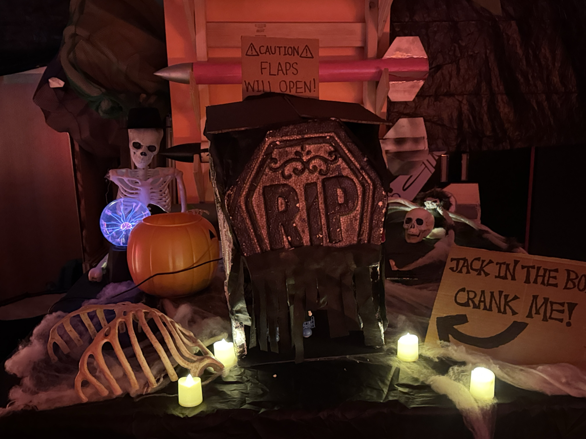

Together with Michael, Micah, and Jack, we decided to create a deceptive Halloween project. We started with the idea of a jack-in-the-box, but instead of having the character pop out in the traditional way, we used a scissor lift inside the box to make it rise toward a person's stomach.
The code sometimes behaved unpredictably as the mechanism came out: it would move from side to side and then snap back into place, sometimes leaning to the left or right. We also downloaded audio files that played when the crank started, followed by a loud scream. We had to test the audio levels because the scream was very loud.
On the day of the demonstration, I think it went well. Sometimes the skeleton hand caught on the opening flaps, so one of us had to reach in and fix it. Overall, I thought the project was pretty cool—not only because it was a Halloween project, but also because it was a group project.